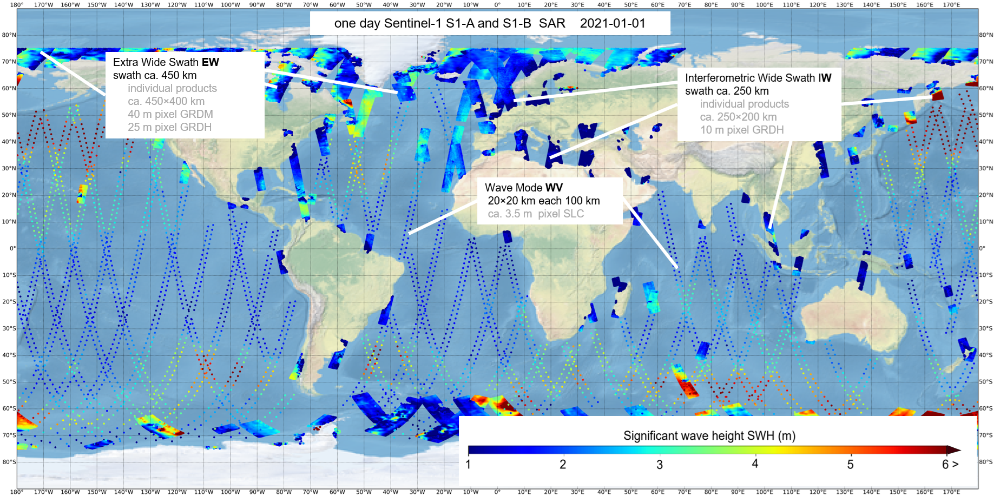
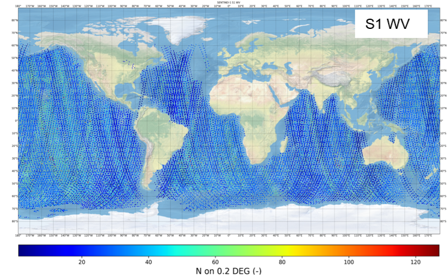
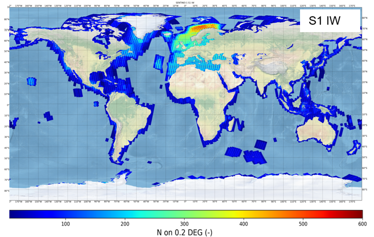
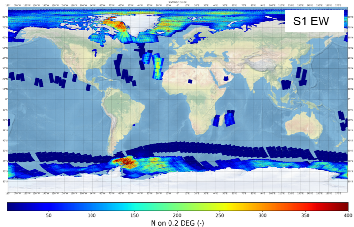

5. SAR datasets#
The main geophysical parameter provided by SAR for sea state is the significant wave height (SWH). Also, first and second moment wave periods, mean wave period, dominant and secondary swell wave heights and windsea wave height and periods (total eight parameters).
Three kinds of datasets are delivered, processed from Sentienl-1 three modes:
Wave mode (WV) acquired over open oceans, along-orbit imagettes ca. 20×20 km every 100 km.
Interferometric Wide Swath mode (IW) in shelf regions and seas, strips up to 2000 km with swath width of ca. 250 km.
Extra Wide Swath mode (EW) in polar regions with swath width of ca. 450 km.
During processing at Ground Stations (GS) the IW and EW raw data are divided into images with individual product IDs with along-flight length of ca. 200 km for IW and ca. 400 km for EW and converted into Level-1 (L1) products for easier distribution. This dividing can differ by processing of the raw SAR data at different GTs.
At first, all available archive scenes were processed. Later only scenes with at least 2 km water area were designated as ocean scenes and included in the DLR sea state products (DLR_OCN).
In total, over ocveans and seas per a day ca.
500 IW products
200 EW products
60 WV tracks (means ca. 600 imagettes) were acquired (S1A and S1B).
1 ID product |
Processing |
|---|---|
S1 IW coverage ca. 250x200 km |
5 km raster - ca. 1500 values/image |
S1 EW coverage ca. 450x400 km |
1.5 km raster - ca. 450 values/image |
S1 WV coverage ca. 20x20 km, each 100 km along.track |
averaged values per imagette |

Fig. 5.1 An example of one-day sea state estimated from Sentinel-1 satellites S1-A and S1-B on 2021-01-01. The three main acquisition modes WV along-flight imagettes, IW, EW scenes are acquired in different areas with switched acquisition modes. The acquired IW and EW raw data are divided into individual products with along-flight length of ca. 200 km for IW and ca. 400 km for EW. In total, 748 products with ca. 570,000 processed water points are shown: 59 WV tracks (averaged values for an imagette 20×20 km), 513 S1 IW products (5 km processing raster), 212 EW products (ca. 17.5 km processing raster).#
5.1. Sentinel-1 Wave Mode WV datasets#
Wave mode (WV) acquired over open oceans, along-orbit imagettes ca. 20×20 km every 100 km. S1 WV (wave mode) acquires two parallel tracks with incidence angles of around 23° (wv1) and around 36° (wv2) with imagettes (small images with an approximate footprint of 20×20 km, acquired every 200 km along each wv1 and wv2 track with a 100 km offset and distance of 100 km between wv1 and wv2 tracks. Using both wv1 and wv2 this means along-track imagettes each 100 km. The length of a track (relative orbit with ID) varies from around 1,000 km (10 imagettes) to 12,000 km (120 imagettes). The nominal spatial pixel resolution of S1 WV is around 3 m depending on the local incidence angle in SLC products used.
S1 WV data 2014-2020 processed in scope of CCI phase-1 can be downloaded here: https://catalogue.ceda.ac.uk/uuid/fe02d5eef9ef4ad889d1917ccad3b35f/

Fig. 5.2 Example one-year ocean data in 2020 (both S1-A and S1-B in service) WV imagettes 20x20 km imagettes every 100 km, color means density of processed data on 0.2° mesh (correspondes to resolution of the wave model WFWAM reanalysis data)#
5.2. Sentinel-1 Interferometric Wide Swath mode (IW) datasets#
S1 IW mode combines a large swath width with a moderate geometric resolution. The individual IW images cover approximately 200 km in azimuth and 250 km in the range direction with a pixel spacing of 10 m. The original GRDH (Ground Range Detected High resolution) L1 products are available in single (HH or VV) or dual polarization (HH+HV or VV+VH). For sea state estimation, the VV or HH polarization data were used, with priority given to VV products.

Fig. 5.3 Example one-year ocean data in 2020 (both S1-A and S1-B in service) IW products, color means density of processed data (5 km raster) on 0.2° mesh (correspondes to resolution of the wave model WFWAM reanalysis data)#
5.3. Sentinel-1 Extra Wide Swath mode (EW) data datasets#
S1 EW mode is similar to the IW mode, but the EW mode acquires data over a wider area than for IW mode using five sub-swaths. The EW mode acquires data over 400 km swath width with a coarser pixel spacing of 40 m (GRDM products) and 25 m (GRDH).

Fig. 5.4 Example one-year ocean data in 2020 (both S1-A and S1-B in service) EW products, color means density of processed data (17.5 km raster) on 0.2° mesh (correspondes to to resolution of the wave model WFWAM reanalysis data)#